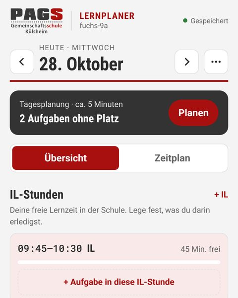
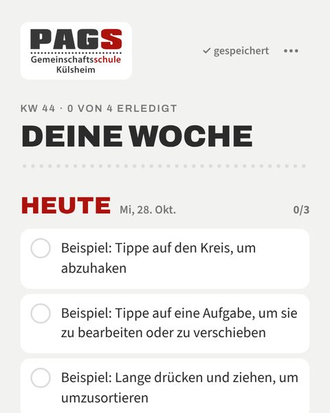
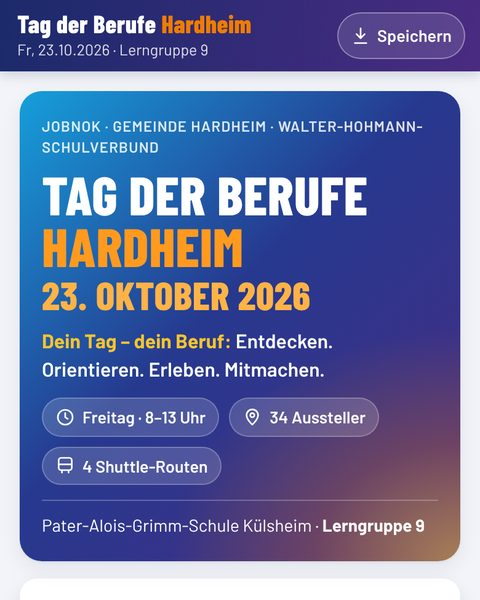
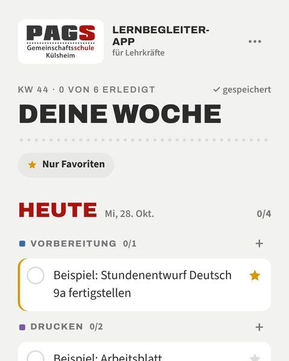
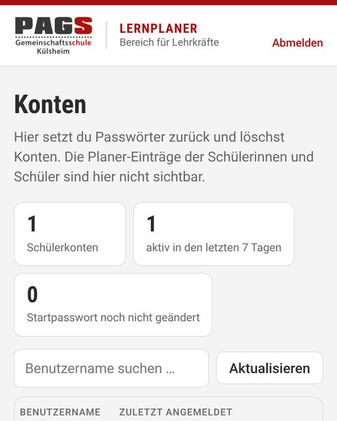
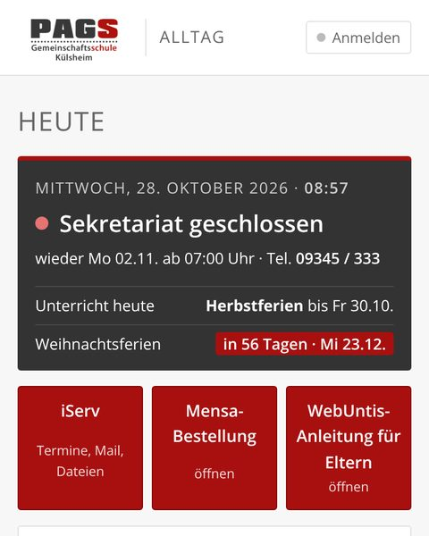
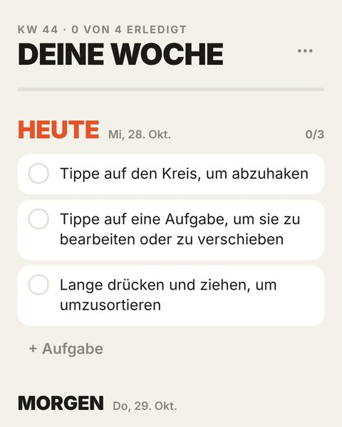
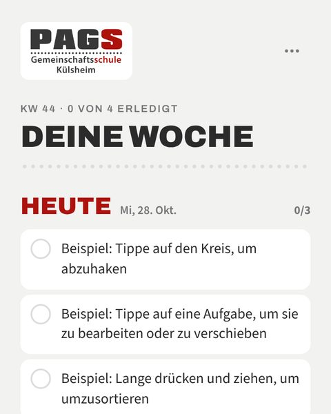

PAGS Lernplaner
Aufgaben, IL-Stunden und Klassenarbeiten im Blick: Tag planen, Woche verteilen, Lernplan für Arbeiten.
Alle Web-Apps an einem Ort: zum Planen, Lernen und Organisieren für Schülerinnen und Schüler, Lehrkräfte und Familien. Zu jeder App gibt es eine bebilderte Anleitung als PDF.
Ein Konto für Lernplaner und Wochenstapel

Aufgaben, IL-Stunden und Klassenarbeiten im Blick: Tag planen, Woche verteilen, Lernplan für Arbeiten.

Die Woche als Stapel: Aufgaben pro Tag anlegen, abhaken, verschieben, wiederholen. Unerledigtes wandert nach „Heute“.

Lageplan, Betriebe und digitaler Laufzettel mit Unterschrift und PDF-Versand für den Berufe-Tag am 23.10.2026.
Gleiches Konto wie im Lernplaner

Die Schulwoche für Lehrkräfte: jeder Tag mit Vorbereitung, Drucken, Einsammeln und Erledigen. Favoriten mit Sternen.

Konten von Lernplaner, Wochenstapel und Lernbegleiter verwalten: Passwörter zurücksetzen, Konten löschen.
Schule kennenlernen und im Alltag begleiten

Ohne Konto, Daten bleiben auf dem Gerät


Eine einzelne HTML-Datei im PAGS-Design. Öffnet in jedem Browser, auch ohne Internet, oder lässt sich auf eigenen Webspace legen.
Lernplaner, Wochenstapel und Lernbegleiter nutzen dieselbe Anmeldung mit Benutzername und Passwort. Jede Person sieht nur ihre eigenen Daten.
Android: Chrome-Menü → „Zum Startbildschirm hinzufügen“. iPhone: Safari → Teilen → „Zum Home-Bildschirm“.
Gespeichert wird nur, was man selbst einträgt, auf Servern in der EU (Frankfurt). Bitte keinen vollen Namen als Benutzernamen verwenden.